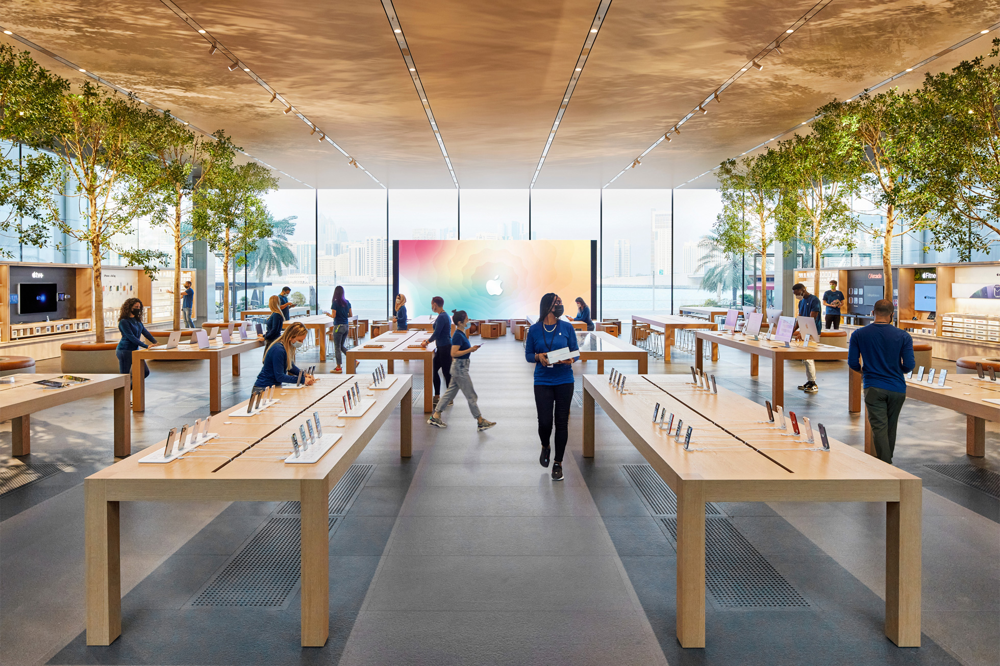
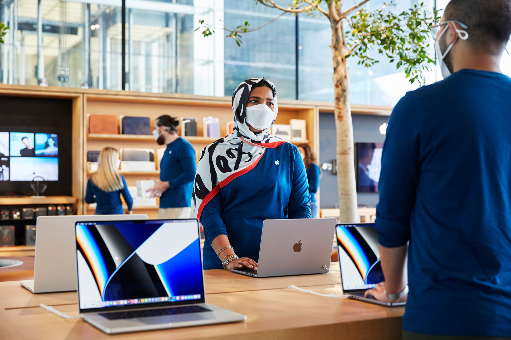

Arc Tech News
Bringing the latest news to you
Apple AI Maryah Island opens
PRESS RELEASE | February 24, 2022

ABU DHABI, UNITED ARAB EMIRATES Apple today previewed Apple Al Maryah Island, a new retail destination elevated above steps of cascading water. The new store creates a direct connection from The Galleria Al Maryah Island to the water’s edge, delivering the best of Apple with shoreline views amid Abu Dhabi’s prestigious financial district.
“We couldn’t be more thrilled to open the stunning Apple Al Maryah Island this Friday,” said Deirdre O’Brien, Apple’s senior vice president of Retail + People. “Our talented team is ready to welcome and delight customers from this vibrant community to our newest location in the Emirates.”

Apple Al Maryah Island will debut three unique Today at Apple sessions that draw inspiration from the beautiful surroundings and creative culture of Abu Dhabi:
- Photo Walk: Fluidity and Motion with iPhone 13 Pro, co-created with local photographer Mohamed Somji
- Music Walk: Liquid Soundscapes with GarageBand
- Art Walk: Drawing Creativity Within Session Guide
On March 6, photographer Mohamed Somji will lead a co-created Photo Walk, sharing his personal techniques. Future Today at Apple sessions hosted in the Forum at Apple Al Maryah Island will invite local musicians, artists, developers, entrepreneurs, and educators that reflect the innovative community of Abu Dhabi. Participants can register for all sessions at apple.co/creativity-within. Apple will also offer ongoing personal advice and guidance for local businesses in the dedicated Boardroom. To further celebrate the grand opening, visitors can also access an exclusive and specially curated Apple Music playlist, featuring local United Arab Emirates artists.
The new store’s multicultural team of more than 80 members represent 28 nationalities and collectively speak over 30 languages, including Arabic, French, Hindi, Tagalog, and more. Throughout the expansive space, customers can get shopping assistance from highly knowledgeable Specialists as they explore the latest products, learn more about Apple services such as the Trade In program, or receive expert advice and support at the Genius Grove.